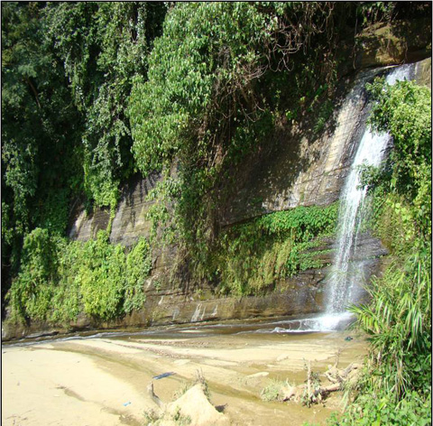

বৈচিত্র্যময় খাগড়াছড়ি
আলুটিলা পর্যটন স্পট থেকে প্রায় ৩কিঃ মিঃ পশ্চিমে (খাগড়াছড়ি থেকে ১১কিঃমিঃ) খাগড়াছড়ি-মাটিরাঙ্গা সড়ক হতে বাম পার্শ্বে ১কিঃ মিঃ দক্ষিণে।
মহাসড়ক হতে হেরিংবোন রাস্তায় জীপ, প্রাইভেট কার, মাইক্রোবাস বা পায়ে হেঁটে যাতায়াত করা যায়।

আলুটিলার ঝর্ণা বা রিছাং ঝর্ণা
জেলা সদর থেকে আলুটিলা পেরিয়ে সামান্য পশ্চিমে মূল রাস্তা থেকে উত্তরে ঝর্ণা স্থানের দূরত্ব সাকুল্যে প্রায় ১১কিঃ মিঃ। ঝর্ণার সমগ্র যাত্রা পথটাই দারুণ রোমাঞ্চকর। যাত্রাপথে দূরের উঁচু-নীচু সবুজ পাহাড়, বুনোঝোঁপ, নামহীন রঙ্গীন বুনোফুলের নয়নাভিরাম অফুরন্ত সৌন্দর্য্য যে কাউকে এক কল্পনার রাজ্যে নিয়ে যায়।
ঝর্ণার কাছে গেলে এক পবিত্র øিগ্ধতায় দেহমন ভরে উঠে। ২৫-৩০ হাত উঁচু পাহাড় থেকে আছড়ে পড়ছে ঝর্ণার জলরাশি, ঢালু পাহাড় গড়িয়ে নীচে মেমে যাচ্ছে এই প্রবাহ। কাছাকাছি দুটো ঝর্ণা রয়েছে এ স্থানে, প্রতিদিন বহু সংখ্যক পর্যটক এখানে এসে ভীড় জমান এবং ঝর্ণার শীতল পানিতে গা ভিজিয়ে প্রকৃতির সাথে একাত্ম হন।
মারমা ভাষায় এর নাম রিছাং ঝর্ণা, ‘রি’ শব্দের অর্থ পানি আর ‘ছাং’ শব্দের অর্থ গড়িয়ে পড়া। মূল সড়ক হতে রিছাং ঝর্ণায় যাওয়ার পথে চারিদিকের পাহাড়ী প্রকৃতি মনের মাঝে এক অনুপম অনুভূতির সৃষ্টি করে। ইচ্ছে করে প্রকৃতির মাঝেই কাটিয়ে দিই সারাক্ষণ। ঝর্ণা ছেড়ে মন চায় না ফিরে আসতে কোলাহল মূখর জনারণ্যে।